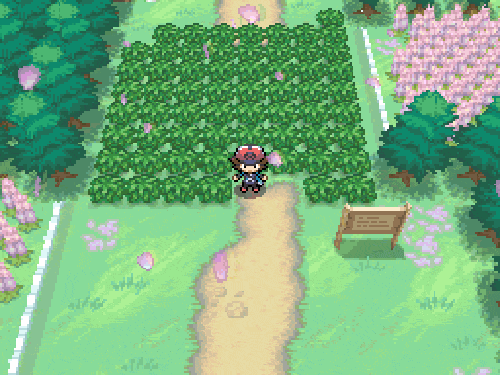
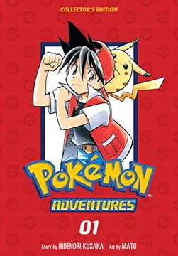
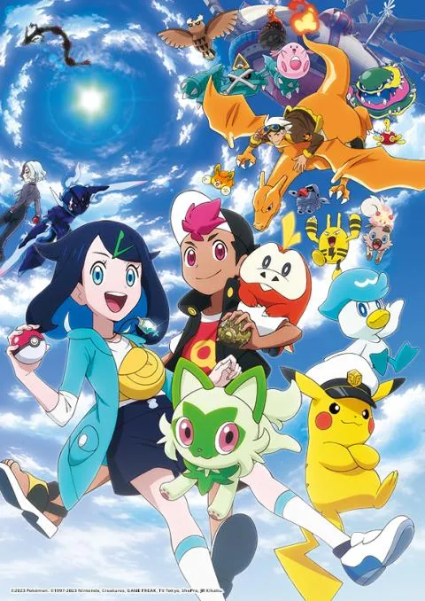

En los Juegos de Pokemon, hay distintas historias y Pokemons.
Ninguna de estas historias tiene conexion,
aunque mini referencias a otros Juegos.
Los Juegos principales son los que se encargan
de introducir nuevas Regiones, y como consecuencia, Pokemons.
Todas las historias tienen como protagonista
a un Chicho/Chica que quiere derrotar a todos los lideres de GYM.
Tambien te dejan completar la Pokedex,
una herramienta que te permite almacenar datos de
distintos Pokemons de la misma Region.
Siempre te dan a elegir entre 3 Pokemons iniciales,
de los cuales los otros 2 desapareceran.
Los Mangas se basan en el protagonista del juego,
pero con 2 grandes diferencias que son: Son 2 Protagonista
y cada uno desarrolla su historia de distinta manera.
No hay mucho que destacar de estos 2 Protagonistas,
el Protagonista Hombre persigue su sueño de ser el mejor Entrenador,
mientras que la Protagonista Mujer elige enfocarse en los concursos Pokemon.
Hay mangas donde el Protagonista es solo 1,
o 2 que persiguen el mismo sueño.
El Anime narra la historia de Ash Ketchup, un joven entrenador
que quiere ser el mejor entrenador del Mundo.
Ash recorre todas las Regiones hasta Galar,
Paldea no la recorre debido a que la emision de la historia
de Ash llego a su fin. Actualmente la Protagonista es Liko, que recorre la region de Paldea.
